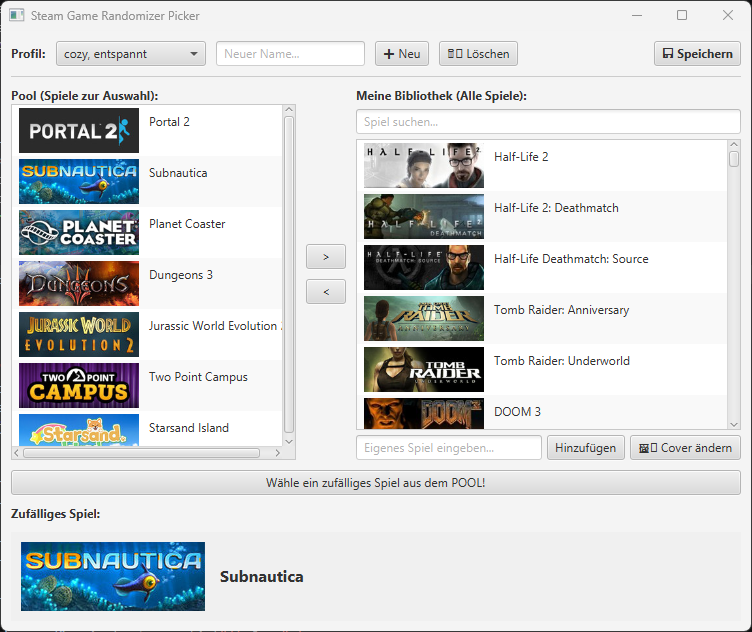

Steam Game
Random Picker
Jeder Gamer kennt das Problem: Eine riesige Steam-Bibliothek, aber keine Ahnung, was man spielen soll. Diese Java-Anwendung verbindet sich mit der Steam-API, liest die Bibliothek des Nutzers aus und wählt basierend auf verschiedenen Filtern zufällig das nächste Abenteuer aus.
- Sprache Java
- Frontend JavaFX
- Build-Tool Maven
- API Steam Web API (REST)
SteamGameRandompicker.java
Java
import java.net.http.HttpClient;
import com.google.gson.Gson;
public
List<Game>
fetchOwnedGames() { try {
HttpClient client = HttpClient.newHttpClient();
// API-Call mit Injektion von API-Key und Steam-ID
String url = String.format(
"http://api.steampowered.com/IPlayerService/GetOwnedGames/v0001/?key=%s&steamid=%s&format=json&include_appinfo=true", this.API_KEY,
this.STEAM_ID ); HttpRequest
request = HttpRequest.newBuilder().uri(new
URI(url)).build(); HttpResponse<String> response =
client.send(request, HttpResponse.BodyHandlers.ofString());
if (response.statusCode() ==
200) {
// JSON-Response mappen (Data Binding via Gson)
Gson gson = new Gson();
SteamResponse steamData = gson.fromJson(response.body(),
SteamResponse.class);
return steamData.response.games;
} } catch (Exception e) {
e.printStackTrace(); }
return Collections.emptyList();
}
Das Frontend
Das Interface wurde mit JavaFX gestaltet und bietet eine intuitive Bedienung. Die Abhängigkeiten und der Build-Prozess werden sauber über Maven verwaltet.
